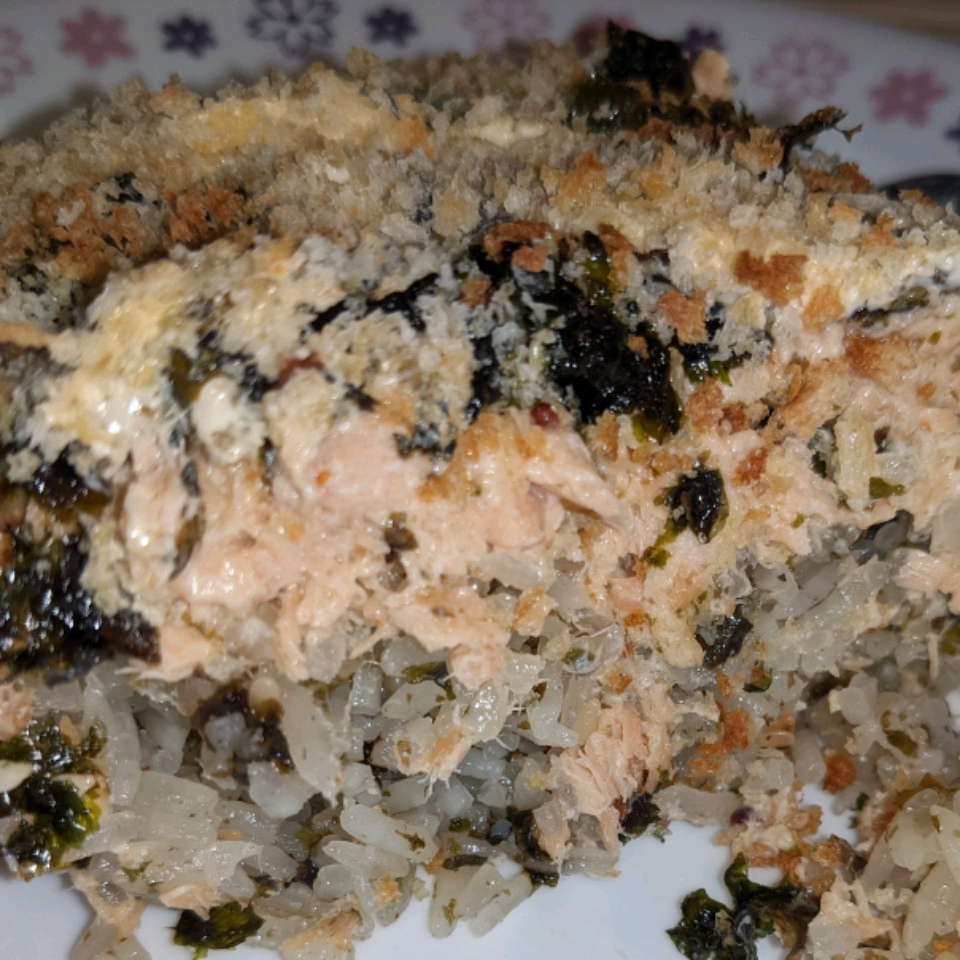

Descriptions:
This savory, satisfying sushi bake recipe is a local favorite in Hawaii. It's the only thing I make to take to parties anymore.
Even at a smaller gathering, the baking dish is empty at the end of the night. Like most casseroles, this dish is very forgiving,
so don't sweat it if you can't find an ingredient or aren't sure about the quantities.
Ingredients:
- 1 ounce dried shiitake mushrooms
- cooking spray
- 4 cups cooked short-grain rice
- 6 tablespoons aji nori furikake (seasoned seaweed and sesame rice topping)
- 1 (8 ounce) package imitation crabmeat, shredded
- ½ cup mayonnaise
- ½ cup sour cream
- 1 ounce tobiko (flying fish roe) (Optional)
- 1 kamaboko (Japanese fish cake), sliced into matchsticks
- 12 (2 ounce) packages seasoned Korean seaweed
Steps
- Soak shiitake mushrooms in hot water until soft, 5 to 10 minutes.
- Meanwhile, set an oven rack about 6 inches from the heat source and preheat the oven's broiler. Lightly grease a 9x13-inch baking dish.
- Spread rice in the prepared pan; sprinkle furikake evenly over top.
- Drain mushrooms and squeeze out excess water. Mix mushrooms, imitation crabmeat, mayonnaise, sour cream, tobiko, and kamaboko together
in a large bowl. Spread over furikake.
- Broil in the preheated oven until lightly browned on top, about 15 minutes. Remove from the oven and slice into 24 portions while in the
baking dish.
- Spoon a generous mound from the baking dish onto a sheet of seaweed, wrap loosely, and consume immediately.
Return to top
Back to Homepage